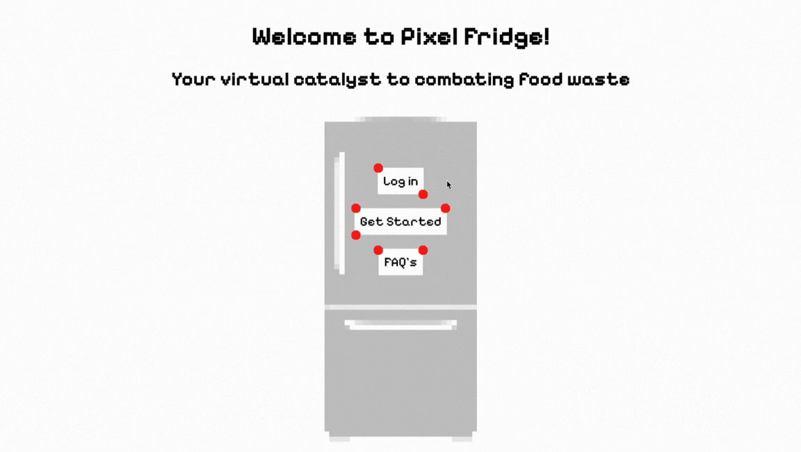
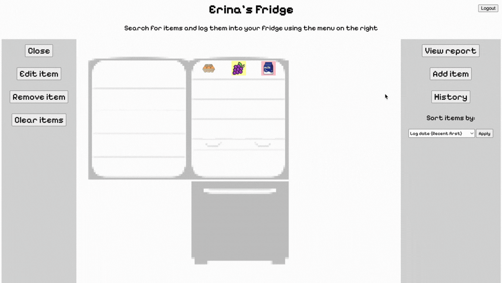
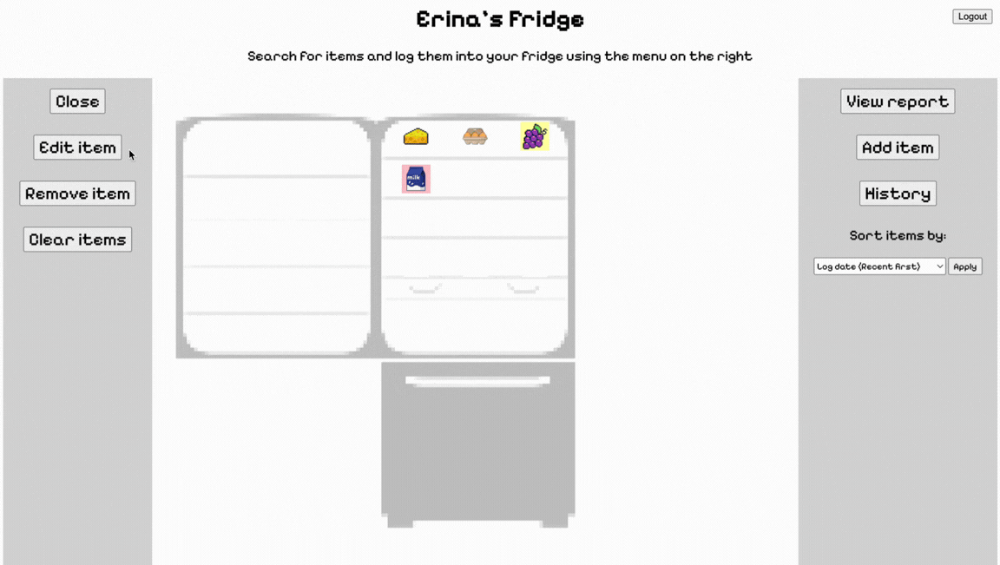
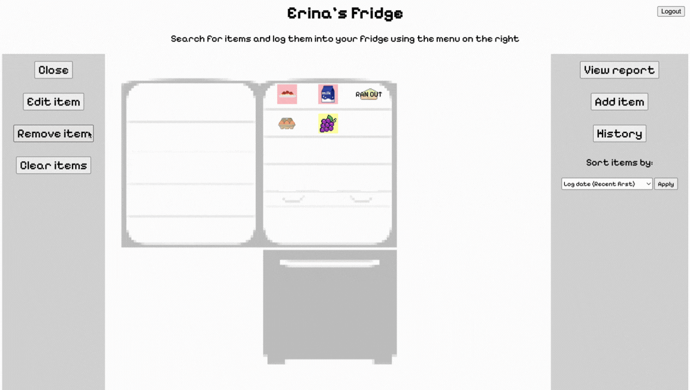
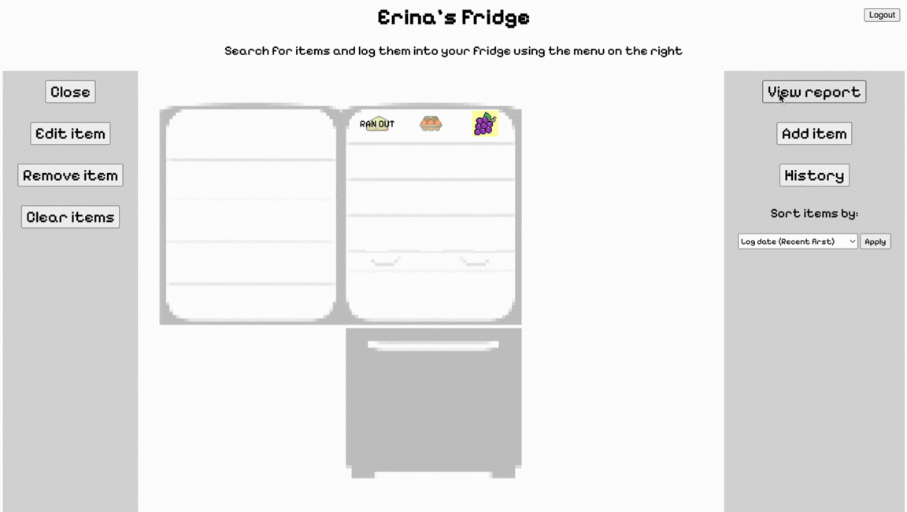
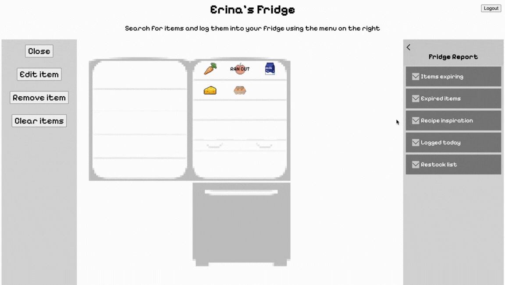
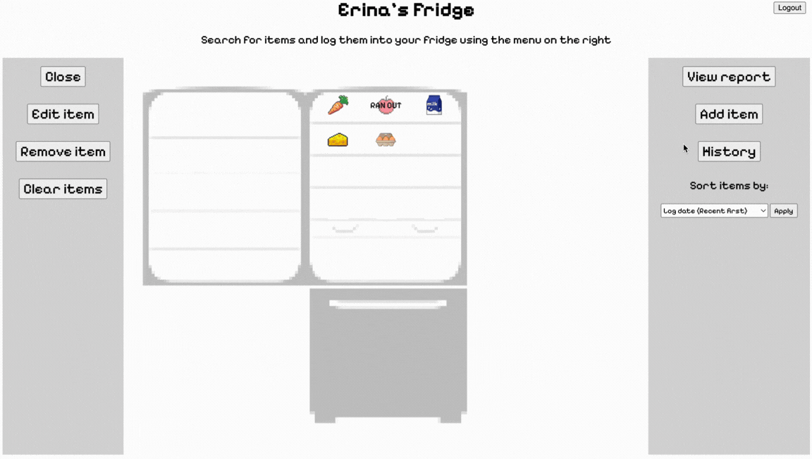
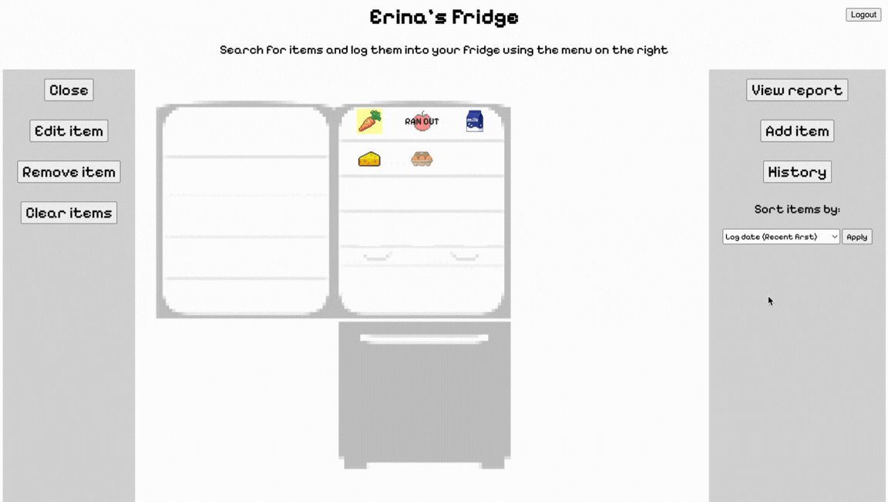
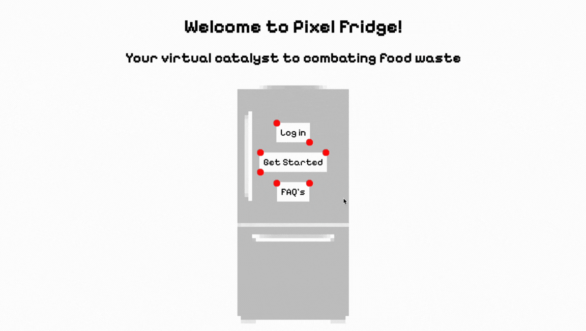

This web-application aims to make fridge inventory accessible to users, facilitating thoughtful choices when grocery shopping, ultimately reducing food waste long-term.
Moreover, the efficient display of information and metrics is crucial in making this a practical and meaningful solution to combating food waste.
I opted for a minimalistic design to optimize user-friendliness, while utilizing icons, colours, and interactive features to maintain navigability, while providing comprehensive and insightful metrics.

Users log on with the email and password used at registration. Appropriate error messages are displayed on failure. On login, users can view item inventory, log information, and visual cues communicating remaining item life.
JWT authentication is handled server-side via Supabase. A new session is started upon login.

To add items, users can navigate to the right panel. The grid populates as a search term is given.
Users are prompted to enter additional log information, such as quantity and manufacture date. An expiration date can be manually set here.
Optionally, a "freshness" assesment can be given as a value from 1 to 10. This is based on the user's observation of the item. Default metrics are calculated assuming a freshness of 10, so earlier expiration dates may be suggested if changed.

The "Ran out" feature allows users to keep track of items to restock.

Items can be removed individually, or cleared based on status.
Removed items are recorded in a user's history for reporting.

Visual cues conveniently indicate items in each report category.

A third-party API compiles recipes using items in the user's inventory.
Items that are expired or out of stock are not included.

Waste metrics are calculated based on historical data, and compiled into visuals for user convenience.
For instance, the first histogram depicts waste trends for the months of the current year. The last bar graph depicts the top 5 items which were wasted in the current year.
Metrics are geared towards helping users make waste-concious decisions when cooking or shopping.

Sorting can be done by remaining fridge life, or log date. Stored in local storage for convenience.

Error messages are displayed on failure. Users are automatically logged in and authenticated upon creating the account.